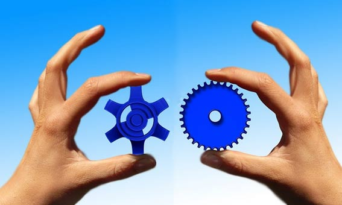
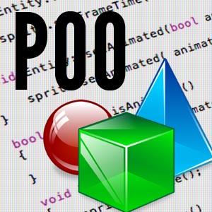
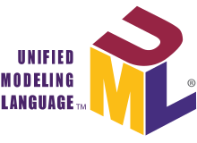
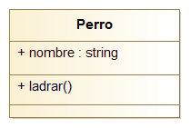

Un paradigma no es más que una ventana desde donde observamos, comprendemos, interpretamos e intervenimos el en mundo. “Adam Smith define paradigma, en su libro ‘Los poderes de la mente’, como ‘un conjunto compartido de suposiciones. Es la manera como percibimos el Mundo’ […] los paradigmas de programación nos indican las diversas formas que, a lo largo de la evolución de los lenguajes, han sido aceptadas como estilos para programar y para resolver los problemas por medio de una computadora” (Instituto Tecnologico de Celaya) Un paradigma de programación es considerado en palabras más sencillas como la forma, que establece las herramientas y el método que serán utilizados en la creación y construcción de un software por un programador. Un lenguaje de programación, es una estructura de lenguaje formal que posee un conjunto de reglas, notaciones, símbolos y caracteres que le permiten a un programador poder expresar como es el proceso de datos y sus estructuras en una computadora. Mediante los lenguajes de programación, el ser humano puede comunicarse con una computadora y decirle qué es lo que tiene que hacer y, al mismo tiempo, sirven para comunicarse con otros seres humanos y expresarles qué es lo que se quiere que haga una computadora. La mayoría de los lenguajes de programación están basados en uno o más paradigmas, a continuación se mencionan algunos:

(Corporation, s.f.) El término Programación Orientada a Objetos (POO), hoy en día ampliamente utilizado, es difícil de definir, ya que no es un concepto nuevo, sino que ha sido el desarrollo de técnicas de programación desde principios de la década de los setenta, aunque sea en la década de los noventa cuando ha aumentado su difusión, uso y popularidad. No obstante, se puede definir POO como una técnica o estilo de programación que utiliza objetos como bloque esencial de construcción.
Nuestro alrededor está formado por objetos de diversa índole: Unos son naturales, como los seres vivos, animales y plantas; otros como los del mundo mineral; los hay también artificiales como los construidos por el ser humano o por máquinas concebidas y elaboradas por él.
¿Qué es un Objeto?
Un objeto en la programación orientada a objetos (POO) es una estructura de datos y conjunto de procedimientos que operan sobre dicha estructura.
Una definición más completa de objeto es: una entidad de programa que consiste en datos y todos aquellos procedimientos que pueden manipular aquellos datos; el acceso a los datos de un objeto es solamente a través de estos procedimientos. A los elementos de un objeto se les conoce como miembros; las funciones que operan sobre los objetos se denominan métodos y los datos se denominan miembros datos.
Un ejemplo sencillo para entender lo que es un objeto seria:

(Corporation, Curso de Java POO: Programación orientada a objetos, s.f.) UML (Unified Modeling Language):
Lenguaje unificado de modelos
Es un “Mapa” del código. No sirve para desarrollar, sino para describir.

La representación de una clase es un diseño UML: En donde la primera fila contendrá el nombre de la clase, la segunda los atributos propias o privados de la clase y la tercera y última tendrán los métodos públicos de la clase.
Un texto argumentativo es aquel que tiene como fin o bien persuadir al destinatario del punto de vista que se tiene sobre un asunto, o bien convencerlo de la falsedad de una opinión previa (refutación), para lo cual le aporta determinadas razones. Aparte de su intención comunicativa, el texto argumentativo se caracteriza por una organización del contenido que lo define como tal: se presentan unas premisas o datos, que no se podrán aceptar si no se admite también una determinada conclusión o tesis.
Si bien el estudio de la argumentación tiene sus orígenes en la retórica clásica, desde un enfoque pragmático y estructural el estudio de los textos argumentativos se ha abordado en los modelos teóricos de la lingüística del texto. Desde esta perspectiva, el texto argumentativo en la teoría de J. M. Adam (1992) es el que presenta como secuencia dominante, esto es, como esquema de base para organizar el contenido, la secuencia argumentativa. Una secuencia argumentativa prototípica se caracteriza por presentar tres proposiciones básicas:
1. Las premisas o datos que se aportan a favor de la opinión que se sostiene en el texto.
2. Las inferencias sobre las que se apoya la opinión defendida.
3. La conclusión o tesis que se sostiene.